MECHANISMS / ROBOTICS / COMPUTATIONAL DESIGN
Avatar Sargamantha Ndoen Mechanical Engineer
Maker at heart.
Build. Test. Optimize. Repeat.
I'm Avatar, a mechanical engineering graduate from Institut Teknologi Bandung. I enjoy designing mechanisms, building robots, and using computational methods to improve their design.

SKILLS
Design, analysis, and making.
Mechanical Design
Mechanisms, actuators, transmissions, linkages.
Simulation
CFD; static, dynamic, and kinematic analysis.
Control
Motor control, teleoperation.
Computational Design
CAD/CAE automation, ML surrogate modelling, multi-objective optimization
SolidWorks · CATIA V5 · Onshape · ANSYS Mechanical / Fluent · Python · MATLAB / Simulink · C++ · SolidWorks API · ANSYS ACT
RESEARCH INTERESTS
Mechanisms that support people.
I want to build on my experience with mechanisms, actuation, and teleoperation to develop more accessible robotic devices for healthcare. My interests include assistive and surgical robotics, compliant mechanisms, and computational design.
- Medical and Assistive Robotics
- Teleoperation
- Compliant and Soft Mechanisms
- Actuation and Transmissions
- Computational Design
- Model-Based Control
NOTABLE PROJECTS
Notable projects.
Compliant mechanisms, custom actuation, computational design, and hands-on robotics. Explore the decisions, prototypes, and testing behind each project.
01 / Undergraduate thesis
Compliant Prosthetic Wrist
Developed a two-DoF compliant wrist and an automated design workflow to optimize geometry for user size, motion, and stiffness targets.
Explore the project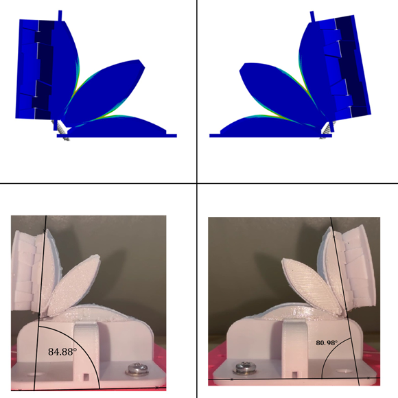
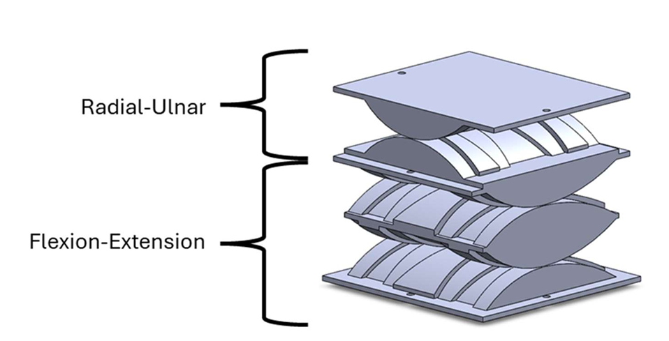
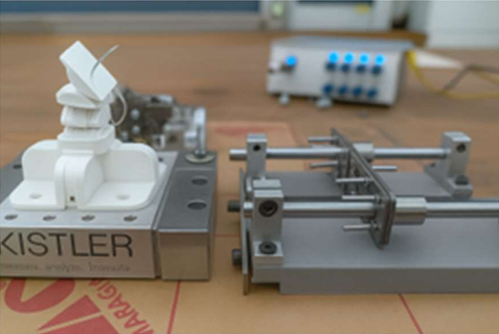
02 / Self-funded personal project
Custom BLDC–Cycloidal Actuators & Teleoperated Robotic Arm
Custom BLDC–cycloidal actuators, a wearable controller, and a teleoperated arm with five arm DoF and two wrist DoF.
Explore the project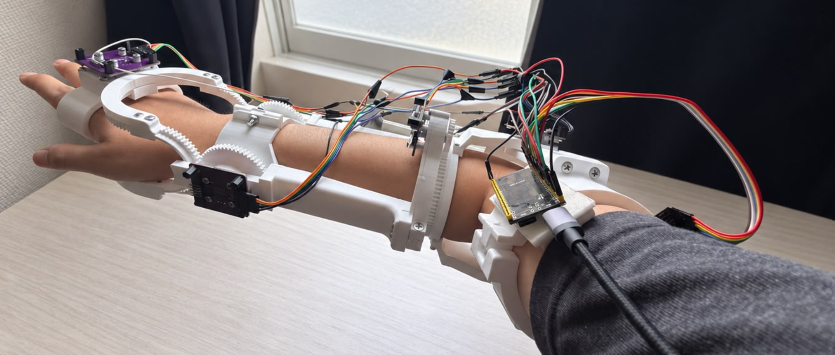
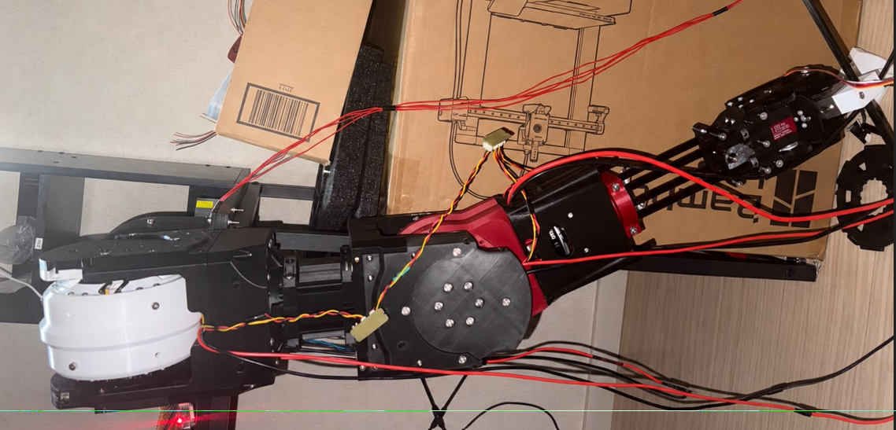
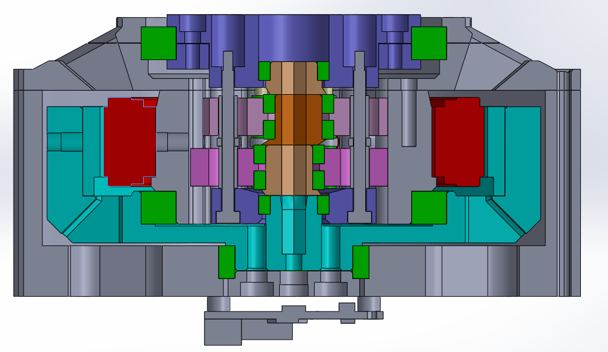
03 / Self-funded personal project
Beltless Gear CVT
Designed and prototyped a gear-based continuously variable transmission, using computational optimization to refine the mechanism.
Explore the project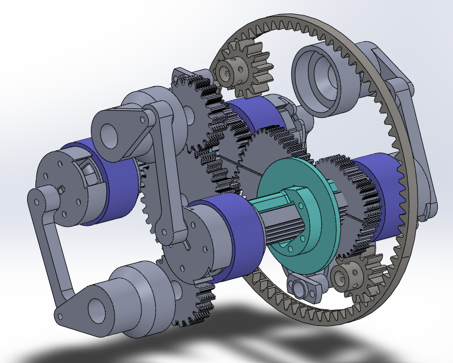
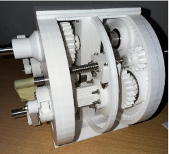
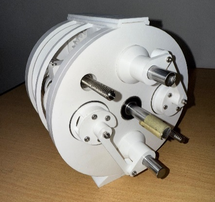
04 / Self-funded personal project
Tendon-Driven Continuum Robot
Built a continuum robot with alternating compliant joints and six pulling tendons for bending in two perpendicular planes.
Explore the project
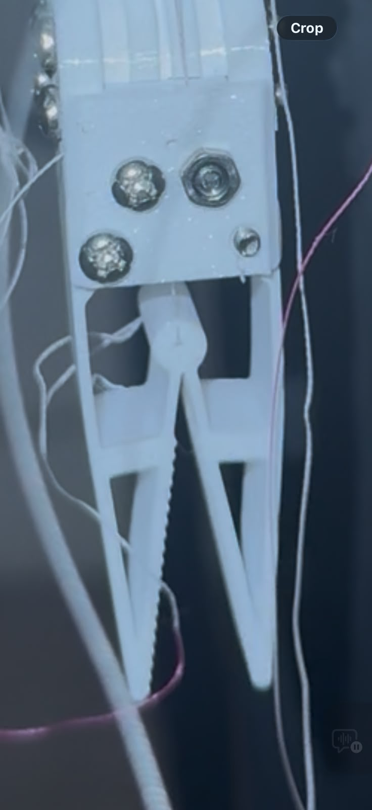
05 / Self-funded personal project
Tendon-Driven Compliant Robotic Hand
Built a 15-DoF robotic hand combining compliant finger joints with tendon-driven actuation.
Explore the project

THE WIDER COLLECTION
A few more things I’ve made.
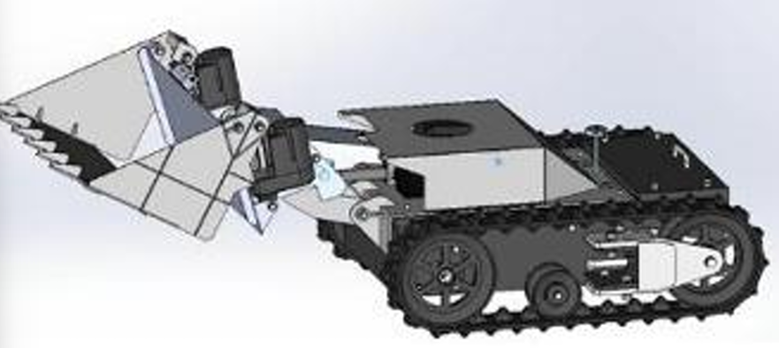
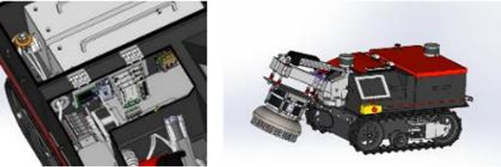
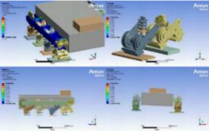
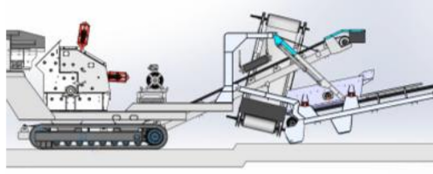
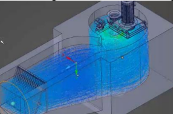
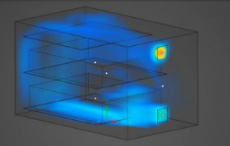
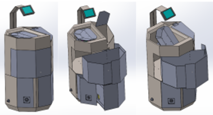
01 / 6 PROJECTS
Internship / Contract projects
Mechanical design and simulation contributions to company and startup projects.

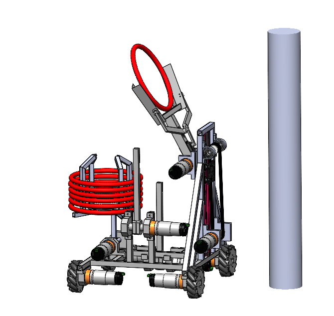

02 / 2 PROJECTS
Competition projects
Mechanical design, integration, and teamwork through robotics and energy projects.


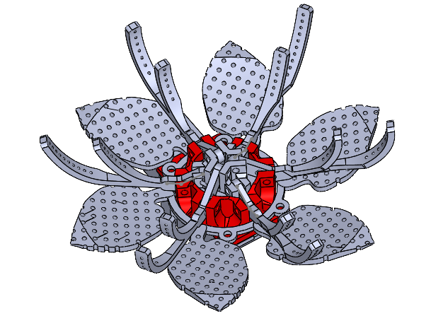
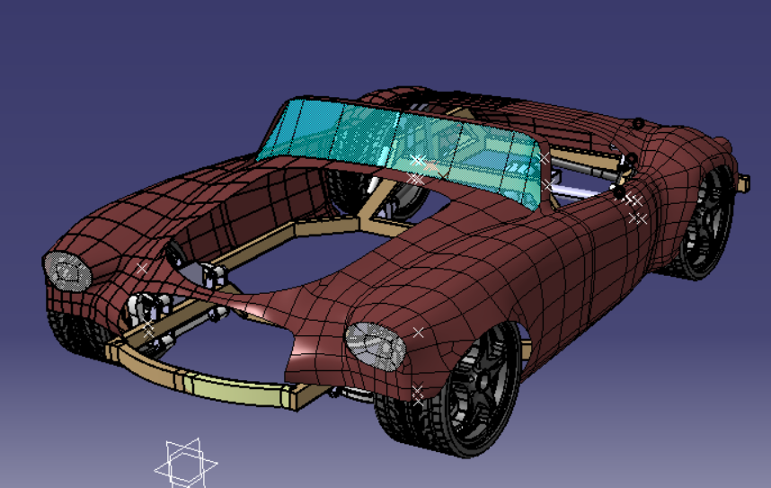
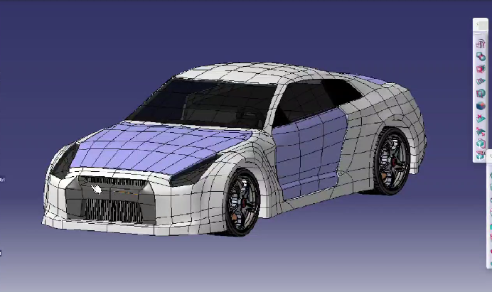

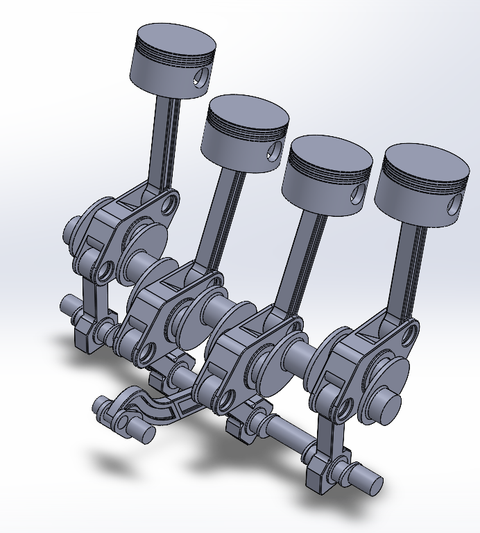
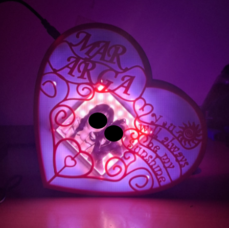
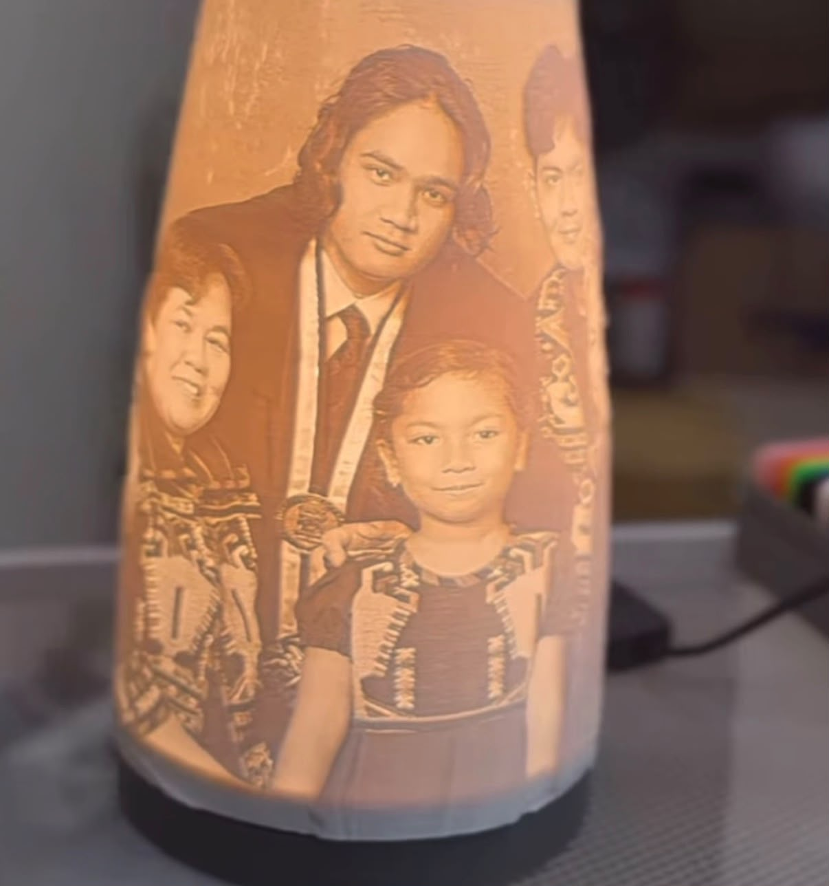
03 / 3 PROJECTS
Additional / Fun projects
Explored art projects, free-form CAD modeling, and machine-learning-assisted mechanism design through personal projects.